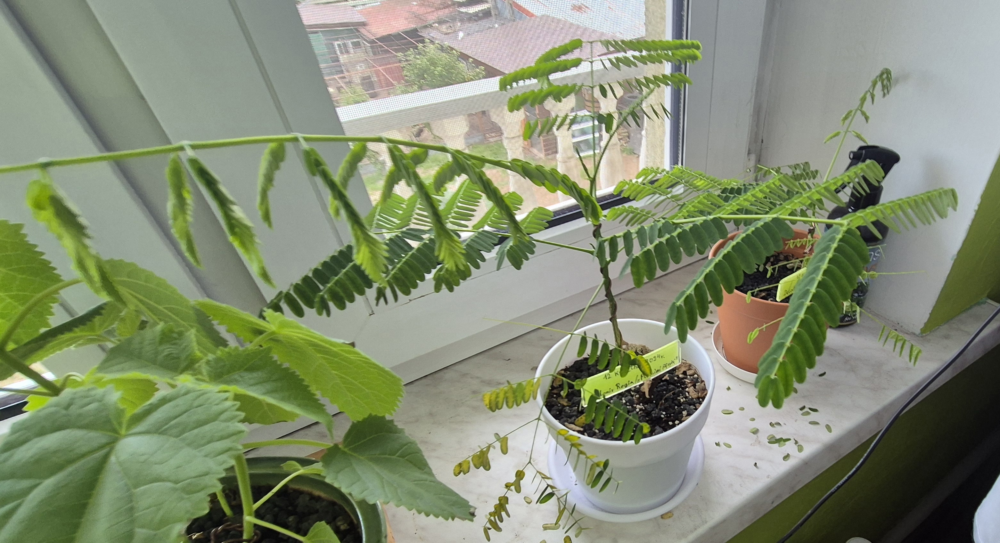

Hobby
Hodowla drzewek bonsai
Opis
Zainteresowałem się hodowlą tych drzewek w najdłuższym dniu roku 2022. Do dziś jeszcze żadnego nie wyhodowałem do dorosłego stanu, ale już idzie mi coraz lepiej.
Poniższe zdjęcie to wczorajszy stan mojej sadzonki Delonix Regii
